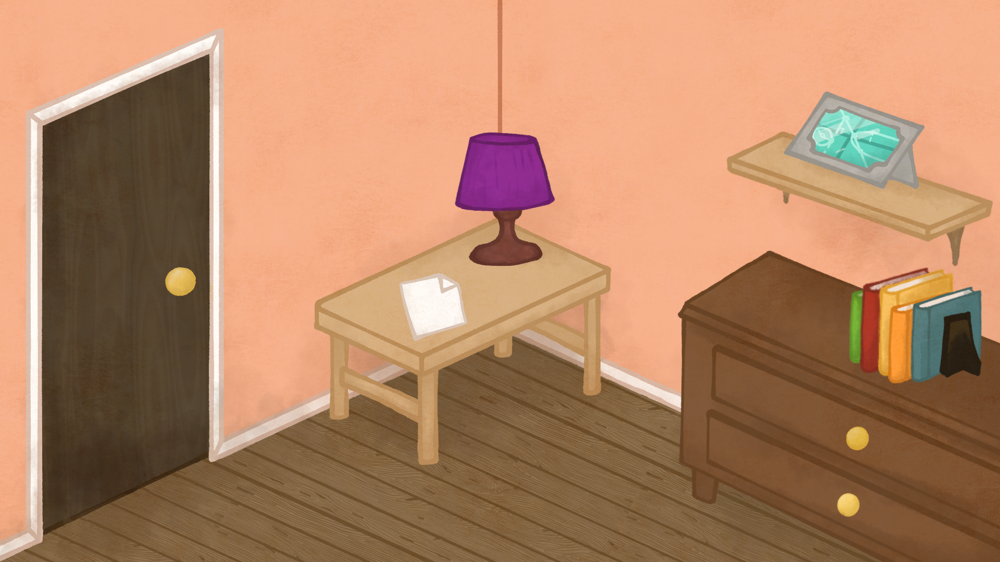

00:00

⬅
⬅
×
Quelle est valeur de \(x\) dans l'équation:
\(12 - 7 \times 12 + 72 = x^2\)
La droite d’équation \(f(x)\) = ax + b passe par les points (5, 8) et (-3, 0). Quelle est l’aire du trapèze formé par les quatre points suivants : l’origine (0, 0), l'ordonnée à l'origine de \(f(x)\), le point (5, 8) et le point (5, 0) ? Donne une réponse arrondie à l’unité près.
Si \(3x + 6y = 30\) et \(x + y = 8\), quelle est la valeur de \(x - y\) ?
🧸 + 🪴 + 🎨 + 🗃️ + 📈 + 📄 =